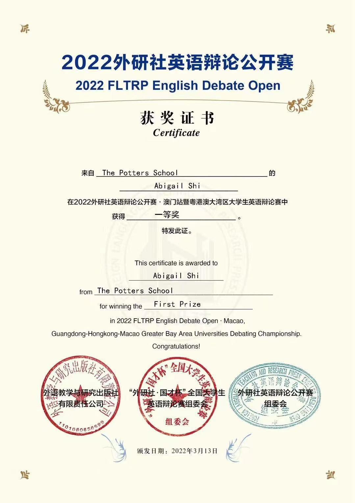

British Parliamentary debate tournament
FLTRP English Debate Open
2022 FLTRP English Debate Open (Greater Bay Area Universities Fist Price) 2023 FLTRP ETIC Cup Winter Camp Third Price
2022 FLTRP English Debate Open (Greater Bay Area Universities Fist Price) 2023 FLTRP ETIC Cup Winter Camp Third Price
U16 women's single
Associated by Sichuan Tennis Association CTJ competition
U18 women's single
Gathering information from students (via a survey), then insert the information into the yearbook website Coorporating with the Yearbook team to seperate the various tasks to individuals. Proficient in website editing skills and constantly checking email information to effectively communicate with classmates
Project building and executing competition in Chinese international schools. We were doing Plastic Ban project. During the process, I designed a questionnaire in the survey group and distributed it on a large scale, and analyzed the final data obtained. I also edited a video of Ep1 for Platic Ban Group, introducing the persecution of plastics on the ocean. And design our logo and distribute it on major social media platforms.

Honored for my leadership in community service projects with the youth group.